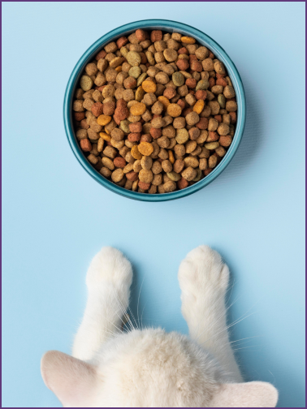

Selecione uma opção: 
Cuidados básicos são essenciais para o bem-estar do animal. Agende uma consulta veterinária o quanto antes para garantir que as vacinas estejam em dia e realizar exames preventivos. O controle de parasitas, como pulgas e carrapatos, também deve ser uma prioridade. Não esqueça de manter a higiene do pet, como escovação regular do pelo e limpeza das orelhas. Proporcione estímulos mentais e físicos com brinquedos e passeios diários para manter seu animal ativo e feliz.
A alimentação adequada é crucial para o desenvolvimento saudável do seu novo companheiro. Ofereça ração de qualidade apropriada à idade e porte do animal, e consulte o veterinário para orientações específicas sobre a dieta ideal, principalmente se houver necessidades nutricionais especiais. Evite mudanças bruscas na alimentação, introduzindo novos alimentos gradualmente para evitar desconfortos digestivos. Além disso, sempre disponibilize água fresca e limpa, e evite dar alimentos inadequados como chocolate, ossos cozidos ou comidas muito temperadas.
Nos primeiros dias após a adoção, é comum que o animal sinta-se ansioso ou confuso com o novo ambiente. Para facilitar a adaptação, crie um espaço tranquilo e reservado, onde ele possa descansar e explorar com calma. Evite exposições a muitos estímulos ou pessoas nos primeiros momentos, permitindo que o pet se familiarize aos poucos com a casa e os membros da família. Estabelecer uma rotina consistente de alimentação, passeios e momentos de descanso ajuda o animal a se sentir mais seguro e confiante.